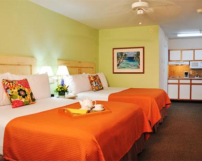
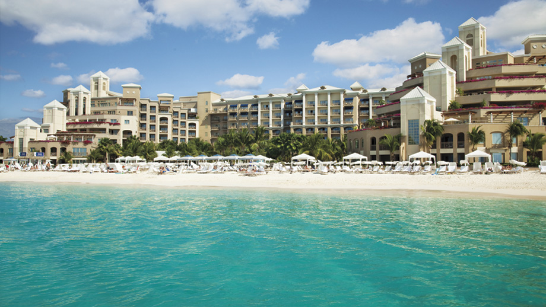
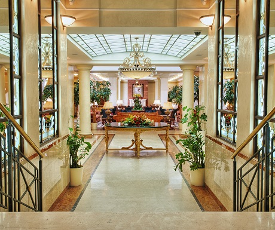
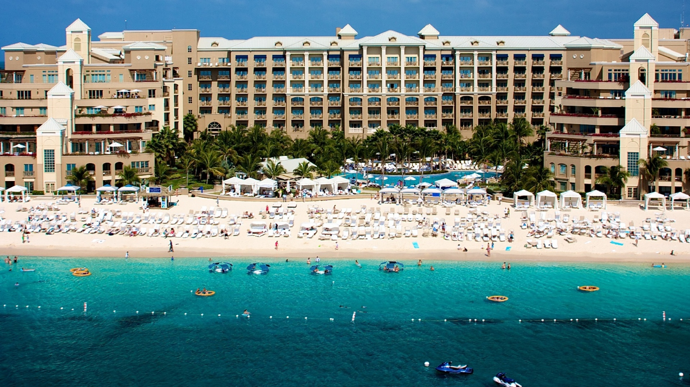
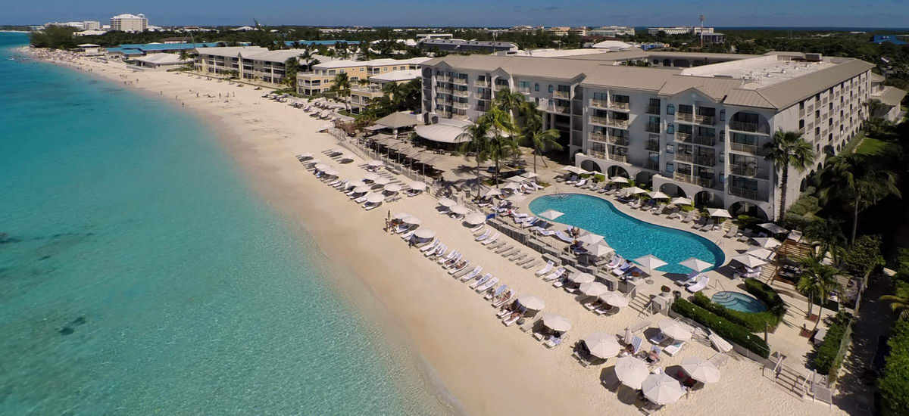
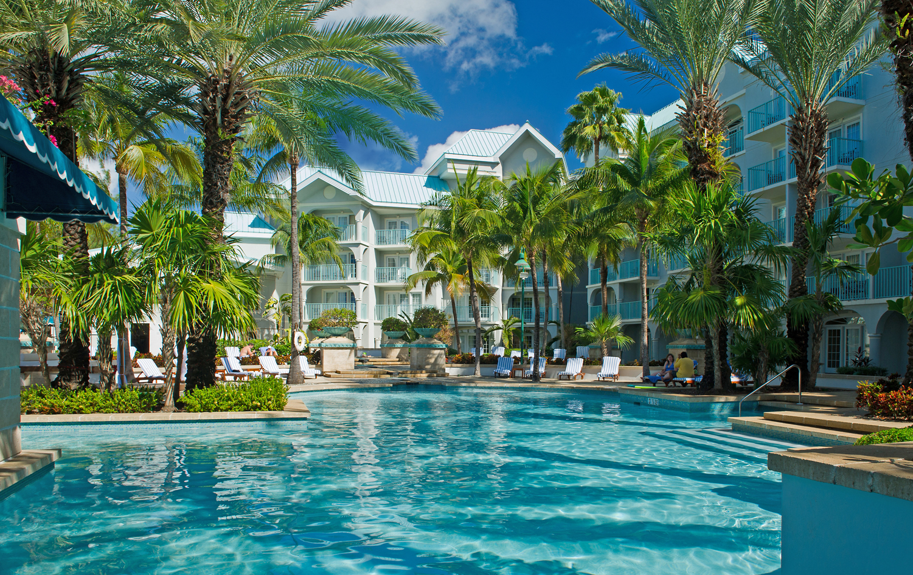

Hotels

The Ritz-Carlton: Grand Cayman
On Seven Mile Beach, this luxe resort is 7 km from Owen Roberts International Airport and 8 km from Cayman Turtle Farm.
Sophisticated rooms with pastel decor offer flat-screens, free Wi-Fi and balconies, plus minifridges and marble bathrooms. Upgraded rooms add sea views, and suites have separate bedrooms. Club rooms offer private lounge access, and there's 24-hour room service.
There are 6 restaurants/bars, including fine dining by Chef Éric Ripert. Other amenities consist of 13 event spaces, shops and a cinema, plus 2 outdoor pools, a hot tub, a spa and a gym. There's also basketball, as well as tennis, golf and a beach with water sports.
Grand Cayman Marriott Beach Resort
This oceanfront resort set on Seven Mile Beach lies 2.9 km from The Blue Tip Golf Course and 9 km from Dolphin Cove.
Featuring balconies, the polished rooms and suites come with Wi-Fi (fee), flat-screens and sofas. They also include tea and coffeemakers, as well as minifridges. Some have ocean views. Suites add living areas, and upgrades offer dining areas.
Breakfast is available (fee), and there's a stylish, ocean-view eatery, as well as a casual cafe and 2 bars. Other perks include a spa, a fitness room and an outdoor pool, plus beach access and 1,800 sq m of event space. Activities such as jet-skiing and kayaking are also available.
The Westin Grand Cayman Resort/Spa
This upmarket seafront resort on Seven Mile Beach lies 1.8 km from The Blue Tip Golf Course and 7 km from the city of George Town.
The polished rooms have sitting areas, granite bathrooms and minibars, as well as flat-screens. Upgrades come with tea and coffeemakers, and balconies/patios, some with sea views. Suites add living areas with pull-out sofas, and some have dining areas. Upgraded suites add furnished verandas. Room service is offered 24/7.
Perks include 4 eateries (3 on the beach), 2 bars and a cafe. There's also a spa, an outdoor pool with a swim-up bar, and a beach with private cabanas, plus 2 ballrooms. A resort fee applies.